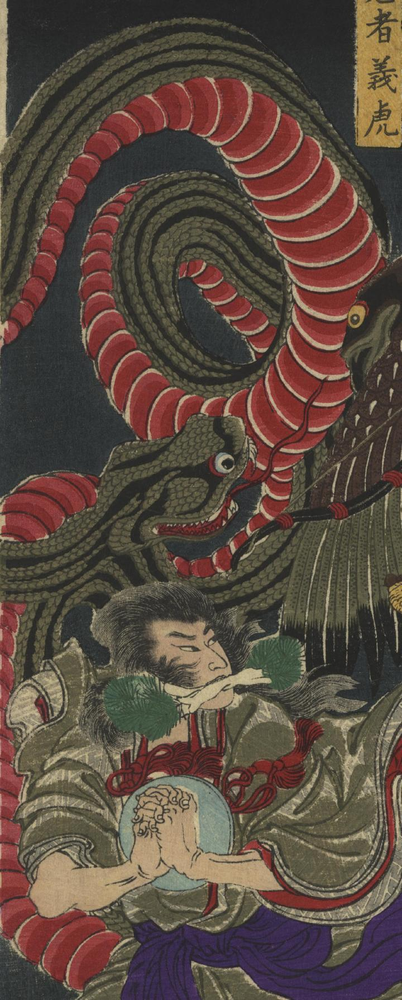

← 图鉴索引

大蛇丸の妖術による大蛇。
著作者：一魁齋芳年／出典：親書誌：U426_nichibunken_0336：豪傑奇術競；ゴウケツ キジュツ クラベ／日付：2014／資源識別子：U426_nichibunken_0336_0001_0001
Copyright (c)2010- International Research Center for Japanese Studies, Kyoto, Japan. All rights reserved.